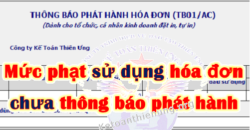

Hóa đơn chưa thông báo phát hành đã sử dụng? Mức phạt chậm nộp thông báo phát hành hóa đơn (không nộp); Nộp chậm mẫu TB04/AC điều chỉnh thông báo phát hành hóa đơn. Kế toán Diệu Tâm xin trích các quy định về vấn đề đó:
Căn cứ theo Nghị định 125/2020/NĐ-CP quy định cụ thể như sau:
---------------------------------------------------------------------
I. Mức phạt hóa đơn chưa thông báo phát hành đã sử dụng:
1. Phạt tiền từ 500.000 đồng đến 1.500.000 đồng đối với hành vi:
- Sử dụng hóa đơn đã được thông báo phát hành với cơ quan thuế nhưng chưa đến thời hạn sử dụng.
2. Phạt tiền từ 6.000.000 đồng đến 18.000.000 đồng đối với hành vi:
- Không lập thông báo phát hành hóa đơn trước khi hóa đơn được đưa vào sử dụng nếu các hóa đơn này gắn với nghiệp vụ kinh tế phát sinh và đã khai, nộp thuế hoặc chưa đến kỳ kê khai, nộp thuế theo quy định.
- Trường hợp không lập thông báo phát hành hóa đơn trước khi hóa đơn được đưa vào sử dụng nếu các hóa đơn này không gắn với nghiệp vụ kinh tế phát sinh hoặc quá thời hạn khai thuế mà chưa được khai, nộp thuế theo quy định thì bị xử phạt theo quy định tại Điều 28 Nghị định này hoặc Điều 16, Điều 17 Chương II Nghị định này.
|
Xem thêm: Mức phạt sử dụng hóa đơn không hợp pháp.
Chi tiết xem thêm: Mức phạt tội trốn thuế. |
----------------------------------------------------------------------
II. Mức phạt lập thông báo phát hành hóa đơn không đầy đủ nội dung:
Phạt tiền từ 2.000.000 đồng đến 4.000.000 đồng đối với một trong các hành vi sau đây:
a) Lập thông báo phát hành hóa đơn không đầy đủ nội dung theo quy định đã được cơ quan thuế phát hiện và có văn bản thông báo cho tổ chức, cá nhân biết để điều chỉnh nhưng tổ chức, cá nhân chưa điều chỉnh mà đã lập hóa đơn giao cho khách hàng;
b) Không niêm yết thông báo phát hành hóa đơn theo đúng quy định;
----------------------------------------------------------------------------
III. Mức phạt nộp chậm TB04/AC thông báo điều chỉnh phát hành hóa đơn:
1. Phạt tiền từ 500.000 đồng đến 1.500.000 đồng đối với một trong các hành vi sau đây:
a) Nộp thông báo điều chỉnh thông tin tại thông báo phát hành hóa đơn đến cơ quan thuế quản lý trực tiếp khi thay đổi địa chỉ kinh doanh dẫn đến thay đổi cơ quan thuế quản lý trực tiếp hoặc khi thay đổi tên quá thời hạn từ 10 ngày đến 20 ngày, kể từ ngày bắt đầu sử dụng hóa đơn tại địa chỉ mới hoặc bắt đầu sử dụng hóa đơn với tên mới;
b) Nộp bảng kê hóa đơn chưa sử dụng đến cơ quan thuế nơi chuyển đến khi thay đổi địa chỉ kinh doanh dẫn đến thay đổi cơ quan thuế quản lý trực tiếp quá thời hạn từ 10 ngày đến 20 ngày, kể từ ngày bắt đầu sử dụng hóa đơn tại địa chỉ mới;
2. Phạt tiền từ 2.000.000 đồng đến 4.000.000 đồng đối với một trong các hành vi sau đây:
a) Nộp thông báo điều chỉnh thông tin tại thông báo phát hành hóa đơn đến cơ quan thuế quản lý trực tiếp khi thay đổi địa chỉ kinh doanh dẫn đến thay đổi cơ quan thuế quản lý trực tiếp hoặc khi thay đổi tên quá thời hạn từ 21 ngày trở lên, kể từ ngày bắt đầu sử dụng hóa đơn tại địa chỉ mới hoặc bắt đầu sử dụng hóa đơn với tên mới;
b) Nộp bảng kê hóa đơn chưa sử dụng đến cơ quan thuế nơi chuyển đến khi thay đổi địa chỉ kinh doanh dẫn đến thay đổi cơ quan thuế quản lý trực tiếp quá thời hạn từ 21 ngày trở lên, kể từ ngày bắt đầu sử dụng hóa đơn tại địa chỉ mới.
Xem thêm: Xử lý hóa đơn khi chuyển địa điểm kinh doanh.
-------------------------------------------------------------------------
IV. Nguyên tắc áp dụng mức phạt vi phạm về phát hành hóa đơn:
- Khi xác định mức phạt tiền đối với người nộp thuế vi phạm vừa có tình tiết tăng nặng, vừa có tình tiết giảm nhẹ thì được giảm trừ tình tiết tăng nặng theo nguyên tắc một tình tiết giảm nhẹ được giảm trừ một tình tiết tăng nặng.
- Các tình tiết giảm nhẹ hoặc tăng nặng đã được sử dụng để xác định khung tiền phạt thì không được sử dụng khi xác định số tiền phạt cụ thể như sau:
+) Khi phạt tiền, mức phạt tiền cụ thể đối với một hành vi vi phạm thủ tục hóa đơn là mức trung bình của khung phạt tiền được quy định đối với hành vi đó.
+) Nếu có tình tiết giảm nhẹ, thì mỗi tình tiết được giảm 10% mức tiền phạt trung bình của khung tiền phạt nhưng mức phạt tiền đối với hành vi đó không được giảm quá mức tối thiểu của khung tiền phạt;
+) Nếu có tình tiết tăng nặng thì mỗi tình tiết tăng nặng được tính tăng 10% mức tiền phạt trung bình của khung tiền phạt nhưng mức phạt tiền đối với hành vi đó không được vượt quá mức tối đa của khung tiền phạt.
Xem thêm: Tình tiết giảm nhẹ tăng nặng trong vi phạm thuế.
Ví dụ: Ngày 8/1/2021 Công ty TNHH Tư vấn & Đào tạo Diệu Tâm chưa thông báo hóa đơn mà đã xuất hóa đơn cho khách hàng (hóa đơn này gắn với nghiệp vụ kinh tế phát sinh).
- Đến ngày 29/1/2021 Cơ quan thuế phát hiện sự việc.
- Do Công ty kê khai thuế GTGT theo quý, nên chưa đến kỳ kê khai quý 1/2021 (hạn chậm nhất là ngày 30/4/2021)
=> Mức xử phạt hành vi sử dụng hóa đơn chưa thông báo phát hành sẽ là khung từ 6 - 18tr (do không có tình tiết giảm nhẹ và tăng nặng) => Nên mức trung bình của khung sẽ là: 12tr.
--------------------------------------------------------------------------------------------
Kế toán Diệu Tâm chúc các bạn làm tốt công việc kế toán!
Các bạn muốn học cách xử lý hóa đơn, kê khai thuế hàng tháng (quý), quyết toán thuế cuối năm ... có thể tham gia Khóa học thực hành kế toán thuế chuyên sâu trên chứng từ thực tế.
---------------------------------------------------------------------------
